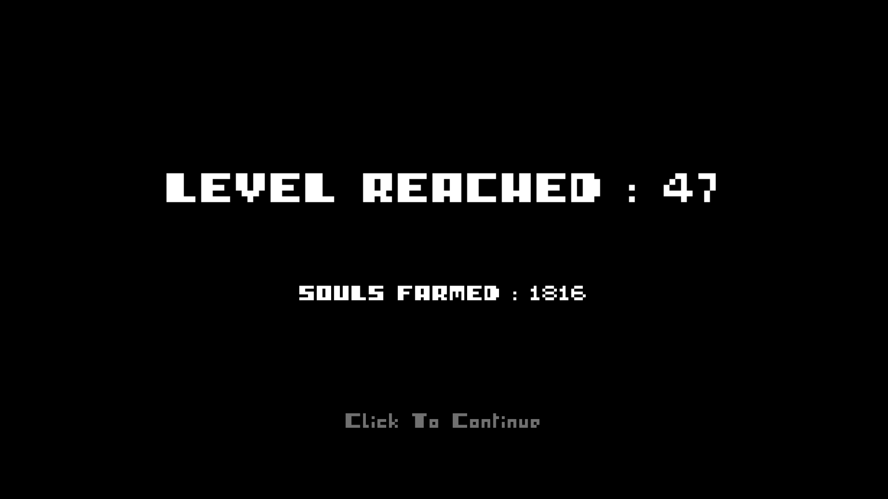
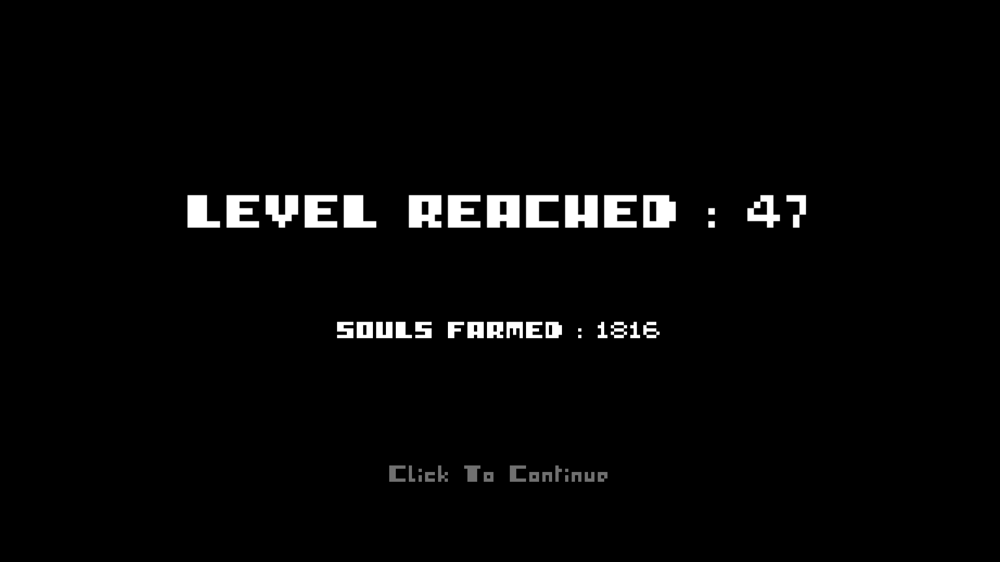

omg please just take away the garden mechanics, and keep the bullet hell, dodging, and weapon aspects and just keep the rougelike mechanics. make procedurally generated levels, or have hard bosses with patterns to memorize, that game would be my favorite web game ever. A 2D BLOODBORNE. Add the guns, more weapons, bosses, fast paced gameplay, with a unique bullet hell to add to the 2d gameplay. I have never seen something like this except ENTER THE GUNGEON, and i friggin love that game.
I love this game and was wondering if you were able to add the option to download it. Idk its just such a fun game and i would love the option to play it without being in browser.
This game, is a 'deus ex machina', a paradox. It makes playable, unified sense out of two otherwise very distinct genres and furthermore, it reveals deeper truth about both of these genres. Namely, that roguelike games, at their peak, are gardening games - with heavy notion put on 'farming' - and that gardening games, are roguelike strifes.
Unfortunately, the game also suffers from the flaws characteristic to both employed genres - repetitiveness, boredom, lack of purpose, hack-the-win mindset, if we could speak about any 'win' conditions.
The artstyle is reminiscent to some other, contemporary, popular titles, sharing similar perspective, but taking the game is a free-to-play, we may consider it a freebie.
For the technical point, I have come to a moment when I could not plant any more seeds, only loosing them from the inventory when issued an action, without any result in the plantsquare becoming occupied as expected. If there is a limit to how many seeds of given kind could be planted altogether, the game is better off to simply display a message, telling the limit has been worn out.
Further into the game, there were also glitches considering protagonist movement. Sometimes it would not move, sometimes it would chaotically dash in a random direction, until stopped by a map obstacle. Understandably, that is rather an issue.
At around level 93 I couldn't plant anymore. When I click with seeds they just disappear, the number goes down but no plant is planted. There was also a soil patch that didn't even let me select
Super fun game dude, I really enjoyed running from the endless waves of evil plant parents spawning plant babies LOL! The game was super fun again and I hope you take this idea one day and make it into something really cool because its a great product that you and your team can sell for some good money and update it for time to come (Although, that is all up to you ) . :)
And for my first run, I think I did pretty good. ( Took about 20 minutes )
Fun snack sized build-a-roguelike. Why isn't this a full fledged game? Great concept and idea, I like that it feels like a mix between Hero Siege and Plant's Vs Zombies. Would love to see this expanded into a larger game.
Good game! Awesome concept, objectives are clear and easy to understand and the graphics is outstanding! Good work on the game and I hope people enjoy it as much as I did.
Awesome game! I love it!!! Feels like the creepy and challenging version of these default farming games. I reached lvl 130! Is there an end or is it endless?
omg this is amazing. My only complaint would be the control placement but it might just be my keyboard! gosh this game is awesome, what a great concept! smooth, responsive, good graphics, neat music, cool enemies... i really really hope you keep going with it! it has tons of potential eheh
That's what I call a top-notch Ludum Dare 41 entry: The visuals are wonderful and even though the gameplay is based on the grinding, it doesn't feel too repetitive, because the players themselves are responsible for their hostile environment. I could perfectly imagine an expanded version of this game featuring more gameplay mechanics of "Harvest Moon", like a little hen house, where chicken hatch their eggs and when one doesn't collect them fast enough, they'll evolve in monster fledglings or something like that. :D Anyway, that was incredibly much fun, so I simply had to recommend this game in a little article on our blog and also to upload a gameplay video of it. <3 Good luck with the ratings!
this game is really fun, I played until lvl 130? (over 100 is impossible to understand exactly what level I am), by planning in advance I was able in the first run to go this far and I could go even further, as other said it would be really nice if there was a mid boss and maybe other maps
Thank you so much for the detailled review and the suggestions, we'll publish a postjam update right after the Ludum Dare is over, we plan to add a few things but the goal is to tweak the game balancing. But maybe in a near future, we'll work on an even bigger full version :)
Thanks, those are great ideas, Well it isn't planned to expand it further right now but I would love to do that, we'll have to discuss about it with the team, but I also have plenty mechanics that I would love to make it a real roguelike game.
← Return to game
Comments
Log in with itch.io to leave a comment.
lvl 44 is my highscore
level 22 is my high score right now i love this game sooooo muc
mine is 24
mine too because i played more
omg please just take away the garden mechanics, and keep the bullet hell, dodging, and weapon aspects and just keep the rougelike mechanics. make procedurally generated levels, or have hard bosses with patterns to memorize, that game would be my favorite web game ever. A 2D BLOODBORNE. Add the guns, more weapons, bosses, fast paced gameplay, with a unique bullet hell to add to the 2d gameplay. I have never seen something like this except ENTER THE GUNGEON, and i friggin love that game.
Still, awesome game though ;)
thank you <3
Any chance for a windows exe download ? Would love to have this offline
I love this game and was wondering if you were able to add the option to download it.
Idk its just such a fun game and i would love the option to play it without being in browser.
how co i restore health-
Every 5 levels :) You have to follow the indicator to get your upgrade each time you unlock it, and it restore maximum health
How do you download this tho
34
11
This game, is a 'deus ex machina', a paradox. It makes playable, unified sense out of two otherwise very distinct genres and furthermore, it reveals deeper truth about both of these genres. Namely, that roguelike games, at their peak, are gardening games - with heavy notion put on 'farming' - and that gardening games, are roguelike strifes.
Unfortunately, the game also suffers from the flaws characteristic to both employed genres - repetitiveness, boredom, lack of purpose, hack-the-win mindset, if we could speak about any 'win' conditions.
The artstyle is reminiscent to some other, contemporary, popular titles, sharing similar perspective, but taking the game is a free-to-play, we may consider it a freebie.
For the technical point, I have come to a moment when I could not plant any more seeds, only loosing them from the inventory when issued an action, without any result in the plantsquare becoming occupied as expected. If there is a limit to how many seeds of given kind could be planted altogether, the game is better off to simply display a message, telling the limit has been worn out.
Further into the game, there were also glitches considering protagonist movement. Sometimes it would not move, sometimes it would chaotically dash in a random direction, until stopped by a map obstacle. Understandably, that is rather an issue.
Is there an ending sequence to the game 'cuz I cant get past 5349 souls and it is really hard to.
I CANT SEEEEEEEEEEEEEEE WWRRRRRRRRRRRRYYYYYYYYYYYY
At around level 93 I couldn't plant anymore. When I click with seeds they just disappear, the number goes down but no plant is planted. There was also a soil patch that didn't even let me select
The level counter also doesnt display the third number if you get to 100+
Super fun game dude, I really enjoyed running from the endless waves of evil plant parents spawning plant babies LOL! The game was super fun again and I hope you take this idea one day and make it into something really cool because its a great product that you and your team can sell for some good money and update it for time to come (Although, that is all up to you ) . :)
And for my first run, I think I did pretty good. ( Took about 20 minutes )
I even made a Small Lets Play:
Enjoy my crazy screaming running from the Plant Babies LOL
https://www.youtube.com/watch?v=of4AiubieYc
Fun snack sized build-a-roguelike. Why isn't this a full fledged game? Great concept and idea, I like that it feels like a mix between Hero Siege and Plant's Vs Zombies. Would love to see this expanded into a larger game.
Good game! Awesome concept, objectives are clear and easy to understand and the graphics is outstanding! Good work on the game and I hope people enjoy it as much as I did.
Interesting concept! Amazing gameplay! Nice graphics and music/sound!! 5 out of 5.
Great game, the combat is really juicy and satisfying. I like all three kinds of plants as well as the watering can mechanic.
Awesome game! I love it!!! Feels like the creepy and challenging version of these default farming games. I reached lvl 130! Is there an end or is it endless?
The game is, happily, endless and has infinite replay ability, but it has no save mechanic
I think this is a very cool concept, I hope you develop this game further!
omg this is amazing. My only complaint would be the control placement but it might just be my keyboard! gosh this game is awesome, what a great concept! smooth, responsive, good graphics, neat music, cool enemies... i really really hope you keep going with it! it has tons of potential eheh
great game and i love all the things you do keep it up dude!
Dark Souls gone gardening :)
Looks cool! Has lots of potential
What does engine was this game made with?
unity
great game when will it be downloadable?
Got to level 44 with something like 1451 kills :D
is there anyway to download this?
Nice art concept and mood!
That's what I call a top-notch Ludum Dare 41 entry: The visuals are wonderful and even though the gameplay is based on the grinding, it doesn't feel too repetitive, because the players themselves are responsible for their hostile environment. I could perfectly imagine an expanded version of this game featuring more gameplay mechanics of "Harvest Moon", like a little hen house, where chicken hatch their eggs and when one doesn't collect them fast enough, they'll evolve in monster fledglings or something like that. :D Anyway, that was incredibly much fun, so I simply had to recommend this game in a little article on our blog and also to upload a gameplay video of it. <3 Good luck with the ratings!
Best wishes,
Sebastian
This is really incredible.
Awesome! It's really addictive to plant and kill =) I gave birth to you and I'll kill you, bugaga! =)
this game is really fun, I played until lvl 130? (over 100 is impossible to understand exactly what level I am), by planning in advance I was able in the first run to go this far and I could go even further, as other said it would be really nice if there was a mid boss and maybe other maps
Amazingggggg gameeeeee ^^
this game is amazing. this is my first time playing this game so the dev can watch it for future update.
the best dark souls game ever of course no doubt
everything is polished in my eyes, the monster is cute and dangerous
just some advice here:
-bigger map please
-maybe watering can upgrade so it could water farther soils
-stamina upgraded of course
-add mini boss, it will be funny :D
lvl 24 is my best
Make a garden game. planting plants will give you xp and new tools, plants try to kill you.
This game is absolutely AMAZING!
I reached level 60, and i would have played it even more, but i died :^)
I really love this game, and i hope it's gonna be released in the future! ^_^
Ps. I tried to tag your team on instagram,but i couldnt find you guys
--------------------------------------------------------------------------------------------------------------
Anyways, I would love to share some ideas/suggestions i've come up with:
-Move the level thing on top right corner, cause sometimes you cant see stuff spawning behind it, when u are in that part of the map;
-Allow players to drop seeds from a little distance (So we dont have to go melee, in a bunch of mobs);
-Water bombs, so when the map is crowded af, and you really can't get close to a crop, at least you can water it from a distance;
- (As another person suggested before me) An encyclopedia with monsters/plants/weapons infos;
-Map expansions;
-Timed/ Limited boosts achieved through some subquests/goals (such as damage increased/the water bombs i mentioned above/invulnerability);
-More subquests, goals, trophies unlocked through achievements;
-More plants & monsters;
-Female character implementation;
--------------------------------------------------------------------------------------------------------------
Thank you for creating such an amazing game!
--------------------------------------------------------------------------------------------------------------
Thank you so much for the detailled review and the suggestions, we'll publish a postjam update right after the Ludum Dare is over, we plan to add a few things but the goal is to tweak the game balancing. But maybe in a near future, we'll work on an even bigger full version :)
I love your game guys ! It's a fucking good job !
Thank you so much !
I think this game could be very fun if expanded upon. monster crossbreeding, an encyclopedia and some upgrades and minions would make it awesome
Thanks, those are great ideas, Well it isn't planned to expand it further right now but I would love to do that, we'll have to discuss about it with the team, but I also have plenty mechanics that I would love to make it a real roguelike game.